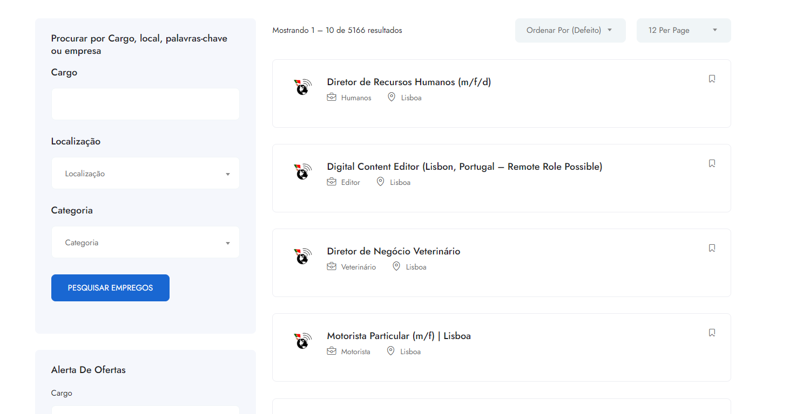

PROJECT DETAILS
Job Board in Portugal
A comprehensive job board platform developed for the Portuguese market using WordPress and modern web technologies.

Project Overview
This project represents a comprehensive job board platform specifically designed for the Portuguese market. The platform connects job seekers with employers, offering a user-friendly interface for both posting and searching for employment opportunities.
The website features a modern, responsive design that works seamlessly across all devices. It includes advanced search functionality, user registration systems, and an intuitive dashboard for both employers and job seekers.
Technologies Used
- WordPress: Content Management System
- PHP: Server-side scripting
- HTML5: Markup language
- CSS3: Styling and layout
- JavaScript: Interactive functionality
- Bootstrap: Responsive framework
- MySQL: Database management
- AJAX: Asynchronous data loading
Key Features
- Job Posting System: Employers can easily post job openings with detailed descriptions
- Advanced Search: Job seekers can filter opportunities by location, category, and salary
- User Profiles: Both employers and job seekers can create detailed profiles
- Application Management: Streamlined application process with tracking
- Responsive Design: Optimized for desktop, tablet, and mobile devices
- SEO Optimized: Built with search engine optimization in mind
- Multi-language Support: Available in Portuguese and English
Challenges & Solutions
Challenge: Creating a user-friendly interface that caters to both employers and job seekers with different needs.
Solution: Implemented separate dashboards with tailored functionality for each user type, ensuring an intuitive experience for all users.
Challenge: Ensuring fast loading times with a large database of job listings.
Solution: Optimized database queries and implemented caching mechanisms to improve performance.
Project Information
- Client: RemoteArround
- Duration: 3 months
- Role: Full-Stack Developer
- Status: Live & Maintained
- Launch Date: 2024
Project Links
Skills Demonstrated